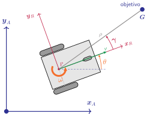
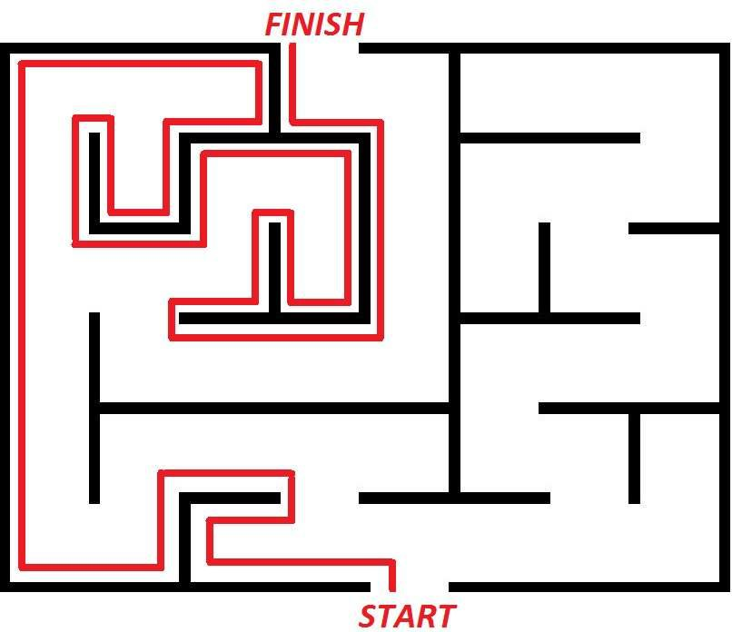
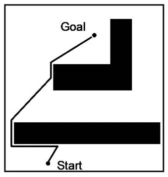
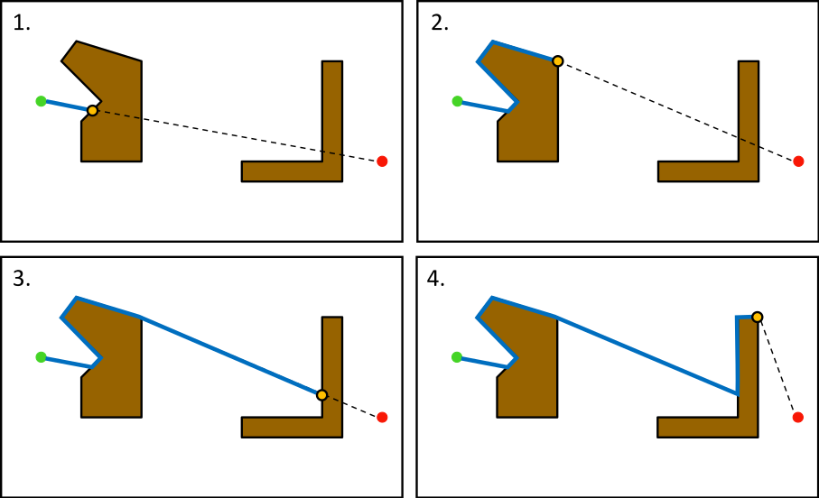
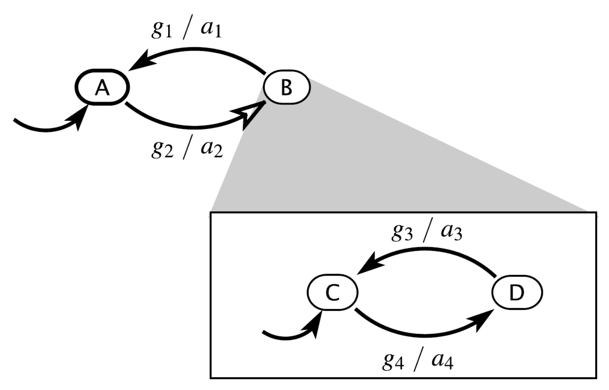
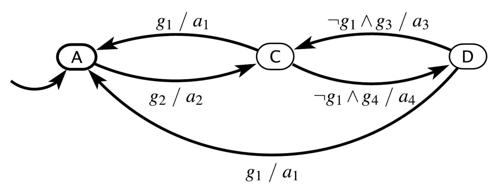
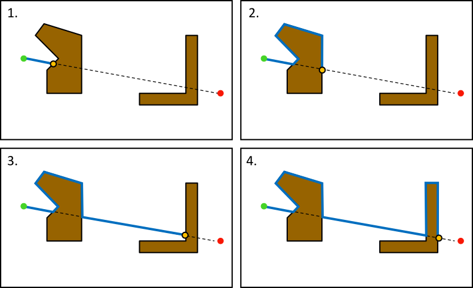

Robótica
Clase 19
Semana 27 - 29/10/2025
Navegación
Área más desafiante en robótica móvil
4 pilares
- Percepción
- Localización
- Control
- Cognición (o inteligencia)
Máquinas de estado finito (fsm)
Máquina abstracta que consiste en:
- Un conjunto de estados \(S\) (incluyendo uno inicial \(s_0\))
- Un alfabeto de posibles entradas (\(\Sigma\))
- Funciones de transición que relacionan un estado con otro para una entrada dada: \[ s_i \stackrel{c}{\rightarrow} s_j \] cada transición tiene una condición \(c\) que determina cuando se aplica
Salidas: Según el tipo de fsm es que dependen cómo y cuando se producen las salidas
Máquinas de estado finito (fsm)
Se pueden representar como una cinco-tupla
\[ \hspace{18em} \LARGE \left( \Sigma, \Gamma, S, s_0, \delta \right) \]
- \(\Sigma\): Entradas (conjunto no vacío finito)
- \(\Gamma\): Salidas
- \(S\): Estados
- \(s_0 \in S\): Estado inicial
- \(\delta\): Funciones de transición \(\delta: S \times \Sigma \to S \times \Gamma\)
Ejemplo de fsm
Procedimiento de autenticación para un sistema, app, página web, etc.
Comportamiento
- Espera el nombre de usuario y la contraseña
- Si los datos son correctos, permite el acceso
- Si los datos son incorrectos, muestra un mensaje y vuelve al estado inicial
- Si el usuario cierra sesión, vuelve al estado inicial
Ejemplo de fsm: Inicio de sesión
\[ \def\sc#1{\dosc#1\csod} \def\dosc#1#2\csod{{\rm #1{\small #2}}} \]
Estados \[S = \left\{ \sc{ESPERANDO}\sc{CREDENCIALES}, \sc{ACCESO}\sc{PERMITIDO} \right\}\]
Entradas: \[\Sigma = \left\{ \sc{CREDENCIALES}\sc{VALIDAS}, \sc{CREDENCIALES}\sc{INVALIDAS}, \sc{CERRAR}\sc{SESION} \right\}\]
Salidas: \[\Gamma = \left\{ \sc{PERMITIR}\sc{ACCESO}, \sc{MENSAJE}\sc{CREDENCIALES}\sc{INVALIDAS},\\ \sc{MENSAJE}\sc{SESION}\sc{CERRADA} \right\}\]
Estado inicial: \[s_0 = \sc{ESPERANDO}\sc{CREDENCIALES}\]
Funciones de transición: \(\delta ?\)
Ejemplo de fsm: Inicio de sesión
Tabla de transición y de salida
- La función de transición \(\delta\) se puede representar mediante una tabla
- Filas \(\to\) Estados \(S\)
- Columnas \(\to\) Entradas \(\Sigma\)
- Celda \(\to\) Tupla \(s,\sigma\) indicando el siguiente estado y la salida
Ejemplo de fsm: Inicio de sesión
Tabla de transición y de salida
| Credenciales válidas | Credenciales inválidas | Cerrar sesión | |
|---|---|---|---|
| Esperando credenciales | Acceso permitido; Permitir acceso |
Esperando credenciales; Mensaje credenciales inválidas |
- |
| Acceso permitido | - | - | Esperando credenciales; Mensaje sesión cerrada |
Ejemplo de fsm: Inicio de sesión
- Las máquinas de estado pueden representarse mediante diagramas de estado
Máquinas de estado finito
Estados
- El estado de un sistema es una condición en un punto particular en el tiempo
- Afecta a cómo el sistema reacciona a las entradas
- Es un “resúmen” del pasado
Máquinas de estado finito
Transiciones
- La definición de una fsm no determina “cuando” evaluar las funciones de transición
- Por lo tanto puede reaccionar:
- Cuando se aplica una entrada ➡️ disparada por evento
- A intervalos regulares ➡️ disparada por tiempo
Máquinas de estado finito
Dos tipos: George Mealy y Edward Moore
fsm de tipo Moore: La salida solo depende del estado actual
fsm de tipo Mealy: La salida depende del estado actual y la entrada
Mealy vs Moore
- Cualquier máquina de Moore puede convertirse en una de Mealy equivalente
- No siempre una de Mealy puede convertirse en una de Moore
- Las de tipo Mealy tienden a ser más compactas (menos estados) y la salida es instantánea a la entrada
- Las de tipo Moore se utilizan para una salida persistente
Máquinas de estados extendidas
La notación se vuelve engorrosa al aumentar la cantidad de estados
Muchas aplicaciones requiren múltiples fuentes de entrada
Solución: Modelo extendido de fsm
- Variables de estado interna
- Transiciones activadas por expresiones booleanas
- Salidas pueden ser llamadas a funciones
Ejemplo de fsm: Inicio de sesión V2
Mejora de seguridad: Luego de múltiples intentos fallidos, bloquear la cuenta
- Estados
\[S = \left\{ \sc{ESPERANDO}\sc{CREDENCIALES}, \sc{ACCESO}\sc{PERMITIDO},\\ \boxed{\sc{CUENTA}\sc{BLOQUEADA}} \right\}\]
Variable interna: \(\sc{INTENTOS}\)
Estado inicial: \[s_0 = \sc{ESPERANDO}\sc{CREDENCIALES}, \sc{INTENTOS} = 0\]
Parámetros: \(\sc{MAXIMO}\sc{INTENTOS} = 3\)
Ejemplo de fsm: Inicio de sesión V2
Aplicación de fsm a robótica
Ejemplo 1: Seguimiento de punto o Point follower (sin obstáculos)
\(\require{color}\)
- Sea una posición y orientación inicial arbitraria del robot \(\textcolor{Maroon}{\boldsymbol{P}(t_0)}\)
- Sea una posición objetivo \(\textcolor{Blue}{\boldsymbol{G}}\)
- Se debe diseñar un algoritmo que mediante una serie de controles \(\textcolor{ForestGreen}{\nu(t)}\) y \(\textcolor{Orange}{\omega(t)}\) conduzca el robot al punto objetivo

Ejemplo 1: Point follower
3 posibles casos
- Caso trivial: el robot se encuentra en el objetivo
\[ \textcolor{Maroon}{\boldsymbol{P}} \equiv \textcolor{Blue}{\boldsymbol{G}} \]
- Comandos:
\[ \begin{cases} \textcolor{ForestGreen}{\nu} = 0\\ %\nu = 0\\ \textcolor{Orange}{\omega} = 0 %\omega = 0 \end{cases} \]
Ejemplo 1: Point follower
3 posibles casos
- Caso sencillo: el eje \(\textcolor{Maroon}{\boldsymbol{x}_R}\) del robot apunta al objetivo
\[\textcolor{Maroon}{\boldsymbol{\gamma}} = 0\]
- Comandos:
\[ \begin{cases} \textcolor{ForestGreen}{\nu} > 0\\ \textcolor{Orange}{\omega} = 0 \end{cases} \]
Ejemplo 1: Point follower
3 posibles casos
- Caso general: el eje \(\textcolor{Maroon}{\boldsymbol{x}_R}\) del robot no apunta al objetivo
\[\textcolor{Maroon}{\boldsymbol{\gamma}} \neq 0\]
Al ser no-holonómico, primero se debe establecer el curso al objetivo
Ejemplo 1: Point follower
Algoritmo
- Paso 1: El curso es lo suficientemente bueno?
- ✔️ Continuar al paso 2
- ❌ Enderezar
- Paso 2: Está cercano al punto?
- ✔️ Finalizar
- ❌ Avanzar
Point-follower con fsm
Identificar los componentes de la máquina
Estados: \(S = \left\{ \textrm{Girar}, \textrm{Avanzar} \right\}\)
Entradas: \(\Sigma = \left\{ \boldsymbol{P}, \theta \right\}\)
Salidas: \(\Gamma = \left\{ \nu, \omega \right\}\)
Parámetro: \(\boldsymbol{G}\)
Variable: \(\gamma\)
Estado inicial: \(s_0 = \textrm{Girar}\)
Funciones de transición: \(\delta ?\)
Point-follower con fsm
Tabla de transición y de salida
| \(\gamma < 0\) | \(\gamma = 0\) | \(\gamma > 0\) | \(\lVert \boldsymbol{P} - \boldsymbol{G} \rVert \neq 0\) | \(\lVert \boldsymbol{P} - \boldsymbol{G} \rVert = 0\) | |
|---|---|---|---|---|---|
| Girar | Girar \[\nu = 0\\ \omega < 0\] |
Avanzar \[\nu = 0\\ \omega = 0\] |
Girar \[\nu = 0\\ \omega > 0\] |
- | - |
| Avanzar | - | - | - | Avanzar \[\nu > 0\\ \omega = 0\] |
Avanzar \[\nu = 0\\ \omega = 0\] |
Point-follower con fsm
Máquina de estado de tipo Mealy
Point-follower con fsm
Máquina de estado de tipo Moore
Point-follower con fsm
Implementación fsm tipo Moore
Las transiciones y las salidas son independientes
La función de control aplica los comandos según la variable
state:0: Girar a izquierda1: Girar a derecha2: Avanzar3: Finalizar
class GoToPoint(Node):
def __init__(self):
#...
# Creación del publisher
self.pub = self.create_publisher(
Twist, 'cmd_vel', 10)
# Creación del timer
self.timer = self.create_timer(
0.1, self.timer_callback)
self.state = 0
self.msg = Twist()
def timer_callback(self):
if self.state == 0:
# Corregir curso izquierda
self.msg.linear.x = 0.0
self.msg.angular.z = np.pi/4
elif self.state == 1:
# Corregir curso derecha
self.msg.linear.x = 0.0
self.msg.angular.z = -np.pi/4
elif self.state == 2:
# Avanzar
self.msg.linear.x = 0.25
self.msg.angular.z = 0.0
elif self.state == 3:
# Finalizar
# Publicar un comando de Twist para detenerse
self.pub.publish(Twist())
self.get_logger().info("Done")
# Terminar la ejecución
self.destroy_node()
raise SystemExit
else:
self.msg = Twist()
self.get_logger().error("Estado desconocido")
self.pub.publish(self.msg)Point-follower con fsm
- Antes de continuar será necesario definir las comparaciones por \(\approx\) y \(\not\approx\)
- Se introducen dos parámetros:
- Tolerancia angular: \(\epsilon_\theta\)
- Tolerancia posicional: \(\epsilon_\boldsymbol{P}\)
\[ \gamma \approx 0 \to |\gamma| < \epsilon_\theta\\ \gamma \not\approx 0 \to |\gamma| > \epsilon_\theta\\ \]
\[ \lVert \boldsymbol{P} - \boldsymbol{G} \rVert \approx 0 \to \lVert \boldsymbol{P} - \boldsymbol{G} \rVert < \epsilon_\boldsymbol{P}\\ \lVert \boldsymbol{P} - \boldsymbol{G} \rVert \not\approx 0 \to \lVert \boldsymbol{P} - \boldsymbol{G} \rVert > \epsilon_\boldsymbol{P} \]
Point-follower con fsm
Implementación
- La función de transición depende solo de la posición y orientación del robot
- Por lo tanto las transiciones se pueden implementar en el callback de
odom
def sub_callback(self, msg: Odometry):
# Obtener la posición y la orientación del robot
x, y, theta = #...
# Calculo del error respecto del objetivo
e_x = self.x_goal - x
e_y = self.y_goal - y
e_pos = np.hypot(e_x, e_y)
theta_d = np.arctan2(e_y, e_x)
# Corregir discontinuidad de arctan2(.)
# ...
e_theta = theta_d - theta
### TRANSICIONES
if np.abs(e_theta) > self.angular_tolerance \
and e_theta > 0.0:
self.cambiar_estado(0)
elif np.abs(e_theta) > self.angular_tolerance \
and e_theta < 0.0:
self.cambiar_estado(1)
elif np.abs(e_theta) <= self.angular_tolerance \
and e_pos > self.goal_tolerance:
self.cambiar_estado(2)
elif np.abs(e_theta) <= self.angular_tolerance \
and e_pos <= self.goal_tolerance:
self.cambiar_estado(3)
def cambiar_estado(self, nuevo_estado):
if self.state != nuevo_estado:
self.state = nuevo_estado
self.get_logger().info(f"Cambio de estado \
{self.state} -> {nuevo_estado}")Aplicación de fsm a robótica
Ejemplo 2: Seguidor de obstáculo o Wall follower
- Objetivo: Dada una pared (u obstáculo), recorrer el perímetro siempre hacia el mismo lado
- Requiere un tipo de sensor de proximidad, se utilizará el de tipo LIDAR

Ejemplo 2: Wall follower
Algoritmo
- Paso 1: Hay una pared u obstáculo al frente?
- ✔️ Continuar al paso 2
- ❌ Buscar la pared u obstáculo (girar a la izquierda)
- Paso 2: La pared u obstáculo está a la derecha?
- ✔️ Continuar al paso 3
- ❌ Hay una pared u obstáculo al frente?
- ✔️ Girar a la izquierda (para que la pared u obstáculo quede a la derecha)
- ❌ Volver al paso 1
- Paso 3: El obstáculo sigue a la derecha?
- ✔️ Avanzar
- ❌ Volver al paso 2
Ejemplo 2: Wall follower
Detección de obstáculos con LIDAR
- Implementación simple: dividir la rotación completa en zonas
- Por cada zona obtener la mínima medición
- Comparar el valor con un umbral definido
Wall-follower con fsm
Identificar los componentes de la máquina
Estados: \(S = \left\{ \textrm{BuscarObstaculo}, \textrm{GirarIzquierda}, \textrm{Avanzar} \right\}\)
Entradas: \(\Sigma = \left\{ R_\textrm{F}, R_\textrm{FL}, R_\textrm{FR} \right\}\)
Salidas: \(\Gamma = \left\{ \nu, \omega \right\}\)
Parámetro: \(d = \textrm{DistanciaPared}\)
Estado inicial: \(s_0 = \textrm{BuscarObstaculo}\)
Funciones de transición: \(\delta ?\)
Wall-follower con fsm
\[ \require{color} \def\obstacle{\textcolor{Maroon}{\boldsymbol{<}}} \]
Tabla de condiciones
| \(R_\textrm{F} \stackrel{?}{\lessgtr} d\) | \(R_\textrm{FL} \stackrel{?}{\lessgtr} d\) | \(R_\textrm{FR} \stackrel{?}{\lessgtr} d\) | Siguiente estado | |
|---|---|---|---|---|
| Sin obstáculos | \(>\) | \(>\) | \(>\) | Buscar Obstáculo |
| Al frente | \(\obstacle\) | \(>\) | \(>\) | Girar Izquierda |
| A izquierda | \(>\) | \(\obstacle\) | \(>\) | Buscar Obstáculo |
| A derecha | \(>\) | \(>\) | \(\obstacle\) | Avanzar |
| Al frente e izquierda | \(\obstacle\) | \(\obstacle\) | \(>\) | Girar Izquierda |
| Al frente y derecha | \(\obstacle\) | \(>\) | \(\obstacle\) | Girar Izquierda |
| A izquierda y derecha | \(>\) | \(\obstacle\) | \(\obstacle\) | Buscar Obstáculo |
| Frente, izquierda y derecha | \(\obstacle\) | \(\obstacle\) | \(\obstacle\) | Girar Izquierda |
Wall-follower con fsm
Tabla de condiciones
| \(R_\textrm{F} \stackrel{?}{\lessgtr} d\) | \(R_\textrm{FL} \stackrel{?}{\lessgtr} d\) | \(R_\textrm{FR} \stackrel{?}{\lessgtr} d\) | Siguiente estado | |
|---|---|---|---|---|
| Sin obstáculos | \(>\) | \(>\) | \(>\) | Buscar Obstáculo |
| Al frente | \(\obstacle\) | \(>\) | \(>\) | Girar Izquierda |
| A izquierda | \(>\) | \(\obstacle\) | \(>\) | Buscar Obstáculo |
| A derecha | \(>\) | \(>\) | \(\obstacle\) | Avanzar |
| Al frente e izquierda | \(\obstacle\) | \(\obstacle\) | \(>\) | Girar Izquierda |
| Al frente y derecha | \(\obstacle\) | \(>\) | \(\obstacle\) | Girar Izquierda |
| A izquierda y derecha | \(>\) | \(\obstacle\) | \(\obstacle\) | Buscar Obstáculo |
| Frente, izquierda y derecha | \(\obstacle\) | \(\obstacle\) | \(\obstacle\) | Girar Izquierda |
Wall-follower con fsm
Tabla de transición
| \[R_\textrm{F} < d\] | \(\dots\) | |
|---|---|---|
| Buscar Obstáculo | Girar Izquierda | \(\dots\) |
| Girar Izquierda | Girar Izquierda | \(\dots\) |
| Avanzar | Girar Izquierda | \(\dots\) |
Wall-follower con fsm
Tabla de condiciones
| \(R_\textrm{F} \stackrel{?}{\lessgtr} d\) | \(R_\textrm{FL} \stackrel{?}{\lessgtr} d\) | \(R_\textrm{FR} \stackrel{?}{\lessgtr} d\) | Siguiente estado | |
|---|---|---|---|---|
| Sin obstáculos | \(>\) | \(>\) | \(>\) | Buscar Obstáculo |
| A izquierda | \(>\) | \(\obstacle\) | \(>\) | Buscar Obstáculo |
| A derecha | \(>\) | \(>\) | \(\obstacle\) | Avanzar |
| A izquierda y derecha | \(>\) | \(\obstacle\) | \(\obstacle\) | Buscar Obstáculo |
| \[R_\textrm{F} < d\] | \[R_\textrm{F} > d \wedge R_\textrm{FL} > d \wedge R_\textrm{FR} < d\] | |
|---|---|---|
| Buscar Obstáculo | Girar Izquierda | Avanzar |
| Girar Izquierda | Girar Izquierda | Avanzar |
| Avanzar | Girar Izquierda | Avanzar |
Wall-follower con fsm
Tabla de condiciones
| \(R_\textrm{F} \stackrel{?}{\lessgtr} d\) | \(R_\textrm{FL} \stackrel{?}{\lessgtr} d\) | \(R_\textrm{FR} \stackrel{?}{\lessgtr} d\) | Siguiente estado | |
|---|---|---|---|---|
| Sin obstáculos | \(>\) | \(>\) | \(>\) | Buscar Obstáculo |
| A izquierda | \(>\) | \(\obstacle\) | \(>\) | Buscar Obstáculo |
| A derecha | \(>\) | \(>\) | \(\obstacle\) | Avanzar |
| A izquierda y derecha | \(>\) | \(\obstacle\) | \(\obstacle\) | Buscar Obstáculo |
| \[R_\textrm{F} < d\] | \[R_\textrm{F} > d \wedge R_\textrm{FL} > d \wedge R_\textrm{FR} < d\] | |
|---|---|---|
| Buscar Obstáculo | Girar Izquierda | Avanzar |
| Girar Izquierda | Girar Izquierda | Avanzar |
| Avanzar | Girar Izquierda | Avanzar |
Wall-follower con fsm
Tabla de transición
| \[R_\textrm{F} < d\] | \[R_\textrm{F} > d \\ R_\textrm{FL} > d \\ R_\textrm{FR} < d\] | \[R_\textrm{F} > d \wedge R_\textrm{FL} < d \wedge R_\textrm{FR} < d\\R_\textrm{F} > d \wedge R_\textrm{FR} > d\] | |
|---|---|---|---|
| Buscar Obstáculo | Girar Izquierda | Avanzar | Buscar Obstáculo |
| Girar Izquierda | Girar Izquierda | Avanzar | Buscar Obstáculo |
| Avanzar | Girar Izquierda | Avanzar | Buscar Obstáculo |
Wall-follower con fsm
Máquina de estado de tipo Moore
Wall-follower con fsm
Implementación fsm tipo Moore
Las transiciones y las salidas son independientes
La función de control aplica los comandos según la variable
state:0: Buscar obstáculo1: Girar a izquierda2: Avanzar
class GoToPoint(Node):
def __init__(self):
#...
# Creación del publisher
self.pub = self.create_publisher(
Twist, 'cmd_vel', 10)
# Creación del timer
self.timer = self.create_timer(
0.1, self.timer_callback)
self.state = 0
self.msg = Twist()
def timer_callback(self):
if self.state == 0:
# Buscar obstáculo
self.msg.linear.x = 0.2
self.msg.angular.z = -np.pi/4
elif self.state == 1:
# Girar a izquierda
self.msg.linear.x = 0.0
self.msg.angular.z = np.pi/4
elif self.state == 2:
# Avanzar
self.msg.linear.x = 0.25
self.msg.angular.z = 0.0
else:
self.msg = Twist()
self.get_logger().error("Estado desconocido")
self.pub.publish(self.msg)Wall-follower con fsm
Implementación
- La función de transición depende solo de las mediciones del LIDAR
- Por lo tanto las transiciones se pueden implementar en el callback de
scan
def sub_callback(self, msg: LaserScan):
# Convertir mediciones a vector de numpy
# y acotar entre rango máximo y mínimo
ranges = np.clip(np.array(msg.ranges), msg.range_min, msg.range_max)
# Segmentar por regiones
regiones = {
'RIGHT': np.min(ranges[ZONES[2]]),
'FRONT_RIGHT': np.min(ranges[ZONES[3]]),
'FRONT': np.min(ranges[ZONES[4]]),
'FRONT_LEFT': np.min(ranges[ZONES[5]]),
'LEFT': np.min(ranges[ZONES[6]]),
}
### TRANSICIONES
_d = self.wall_distance
if regiones['FRONT'] > _d and regiones['FRONT_LEFT'] > _d and regiones['FRONT_RIGHT'] > _d:
# Ninguna pared detectada
self.cambiar_estado(0)
elif regiones['FRONT'] < _d and regiones['FRONT_LEFT'] > _d and regiones['FRONT_RIGHT'] > _d:
# Pared al frente
self.cambiar_estado(1)
elif regiones['FRONT'] > _d and regiones['FRONT_LEFT'] < _d and regiones['FRONT_RIGHT'] > _d:
# Pared a la izquierda
self.cambiar_estado(0)
elif regiones['FRONT'] > _d and regiones['FRONT_LEFT'] > _d and regiones['FRONT_RIGHT'] < _d:
# Pared a la derecha
self.cambiar_estado(2)
elif regiones['FRONT'] < _d and regiones['FRONT_LEFT'] < _d and regiones['FRONT_RIGHT'] > _d:
# Pared al frente e izquierda
self.cambiar_estado(1)
elif regiones['FRONT'] < _d and regiones['FRONT_LEFT'] > _d and regiones['FRONT_RIGHT'] < _d:
# Pared al frente y derecha
self.cambiar_estado(1)
elif regiones['FRONT'] < _d and regiones['FRONT_LEFT'] < _d and regiones['FRONT_RIGHT'] < _d:
# Frente, izquierda y derecha
self.cambiar_estado(1)
elif regiones['FRONT'] > _d and regiones['FRONT_LEFT'] < _d and regiones['FRONT_RIGHT'] < _d:
# Solo izquierda y derecha
self.cambiar_estado(0)
else:
self.get_logger().warning("Caso desconocido")Aplicación de fsm a robótica
Ejemplo 3: Go-To-Point con evasión de obstáculo
- Seguir el contorno de cada obstáculo en el camino hacia el objetivo \(\boldsymbol{G}\)
- Algoritmo de evasión más simple
- Conocido como Bug0

Ejemplo 3: Bug0
Algoritmo
- Paso 1: El camino al objetivo está libre?
- ✔️ Ir al objetivo
- ❌ Continuar al paso 2
- Paso 2: Hay un obstáculo para evadir?
- ✔️ Rodear obstáculo
- ❌ Continuar al paso 1
Se pueden combinar los dos algoritmos anteriores: Go-To-Point y Wall-follower

Composición de fsm
- Desventaja de las fsm: La mayoría de sistemas reales el número de estados es grande (a veces infinito)
- Problemas para representar directamente el gran espacio de estados
Divide y vencerás: resolver un problema difícil, dividiéndolo en partes más simples
Composición de fsm
Diferentes tipos de composición:
- Concurrente:
- Según la reacción:
- Sincrónica (o simultánea)
- Asincrónica (o independiente)
- Según el orden:
- Paralelo (side-by-side)
- Serie (cascada)
- Re-alimentación (feedback)
- Según la reacción:
Jerárquica
Composición jerárquica de fsm
La idea principal es el refinamiento del estado (definición sencilla)
Qué pasa si la máquina está en el estado \(C\) y \(g_1\) se activa al mismo tiempo que \(g_4\)?
Composición jerárquica de fsm
Se evalúa la transición más profunda (o más refinada), luego la máquina de estado contenedor, luego su contenedora, y así sucesivamente
- Ejemplo de composición jerárquica y su equivalente

Bug0 con fsm jerárquica
Ejemplo 3: Bug0
Algoritmo
- Paso 1: El camino al objetivo está libre?
- ✔️ Ir al objetivo
- ❌ Continuar al paso 2
- Paso 2: Hay un obstáculo para evadir?
- ✔️ Rodear obstáculo
- ❌ Continuar al paso 1
Bug0 con fsm jerárquica
Implementación
- Se definen 2 estados independientes para \(\mathbf{M_1}\) y \(\mathbf{M_2}\):
- Go-to-point:
g2p_state - Wall-follower:
wf_state
- Go-to-point:
- Se reutiliza el código de ambas fsm
- Se redefine la función de control y se predefinen los comandos de
Twist
class GoToPoint(Node):
#...
def timer_callback(self):
if self.wf_state == 0 and self.g2p_state != 3:
# Si no hay pared al frente
if self.g2p_state == 0:
self.msg = self.corregir_curso_izq()
elif self.g2p_state == 1:
self.msg = self.corregir_curso_der()
elif self.g2p_state == 2:
self.msg = self.avanzar()
elif self.wf_state == 1 and self.g2p_state != 3:
# Si tiene una pared al frente y
# no llegó a destino
self.msg = self.girar_izq()
elif self.wf_state == 2 and self.g2p_state != 3:
# Si la pared está a la derecha y
# no llegó a destino
self.msg = self.seguir_obstáculo()
elif self.g2p_state == 3:
self.finalizar()
else:
self.msg = Twist()
self.get_logger().error("Estado desconocido")
passBug0 con fsm jerárquica
Problema: Al ser un algoritmo básico tiene casos donde falla
Alternativa a Bug0: Bug1
Ejemplo 4: algoritmo Bug1
- Al encontrar un obstáculo, guardar la posición actual \(H\) y la distancia al objetivo \(d_H\)
- Rodear completamente el obstáculo hasta volver a \(H\) obteniendo el punto de menor distancia al objetivo \(L\) tal que \(d_L \leq d_H\)
- Dirigirse nuevamente a \(L\) rodeando el objetivo, corregir el curso y continuar al objetivo
Algoritmo ineficiente pero eficaz

Alternativa a Bug1: Bug2
Ejemplo 5: algoritmo Bug2
- Se traza una recta entre el punto inicial y el objetivo
- Avanzar por la recta hasta que:
- Se alcance el objetivo (Fin)
- Se encuentra un obstáculo
- Seguir el contorno del objeto hasta que:
- Se alcance el objetivo (Fin)
- Se cruza la recta en un punto a menor distancia que la del punto de contacto (vuelve al paso anterior)

Ejemplo 5: Bug2
Algoritmo
- Paso 1: El camino al objetivo está libre?
- ✔️ Girar al objetivo y avanzar
- ❌ Continuar al paso 2
- Paso 2: Guardar la posición y rodear el obstáculo hacia la izquierda
- Paso 3: La posición actual cruza la recta?
- ✔️ Si la distancia al objetivo es menor, volver al paso 1
- ❌ El objetivo no puede alcanzarse
Bug2 con fsm
Identificar los componentes de la máquina
- Estados: \(S = \left\{ \textrm{GirarAlObjetivo}, \textrm{Avanzar}, \textrm{RodearObstaculo} \right\}\)
- Entradas: \(\Sigma = \left\{ \boldsymbol{P}, \theta \right\} + \left\{ R_\textrm{F}, R_\textrm{FL}, R_\textrm{FR} \right\}\)
- Salidas: \(\Gamma = \left\{ \nu, \omega \right\}\)
- Parámetro: \(\boldsymbol{G}, d = \textrm{DistanciaPared}\)
- Variable: \(\gamma = \textrm{CursoAlObjetivo}, \boldsymbol{H} = \textrm{PuntoContacto}, \boldsymbol{P}_0 = \textrm{Posición inicial}\)
- Estado inicial: \(s_0 = \textrm{GirarAlObjetivo}\)
Bug2 con fsm
Tabla de transición
| \(\gamma \not\approx 0\) | \(\gamma \approx 0\) | \(\lVert \boldsymbol{P} - \boldsymbol{G} \rVert \approx 0\) | \(R_\textrm{F} < d\) \[\small \begin{cases}R_\textrm{F} > d \\ R_\textrm{FL} > d \\ R_\textrm{FR} < d\end{cases}\] | \(\boldsymbol{P} \in \overline{\boldsymbol{P}_0 \boldsymbol{G}}\) \(\lVert \boldsymbol{P} - \boldsymbol{G} \rVert < \lVert \boldsymbol{H} - \boldsymbol{G} \rVert\) | |
|---|---|---|---|---|---|
| Girar al objetivo | Girar al objetivo | Avanzar | - | - | - |
| Avanzar | Girar al objetivo | - | Finalizar | Rodear obstáculo \(\boldsymbol{H}:=\boldsymbol{P}\) |
- |
| Rodear obstáculo | - | - | Finalizar | Rodear obstáculo | Girar al objetivo |
Bug2 con fsm
Máquina de estado
Laboratorio
Implementación Bug2 con fsm
Robótica - TUAR - FICH - UNL